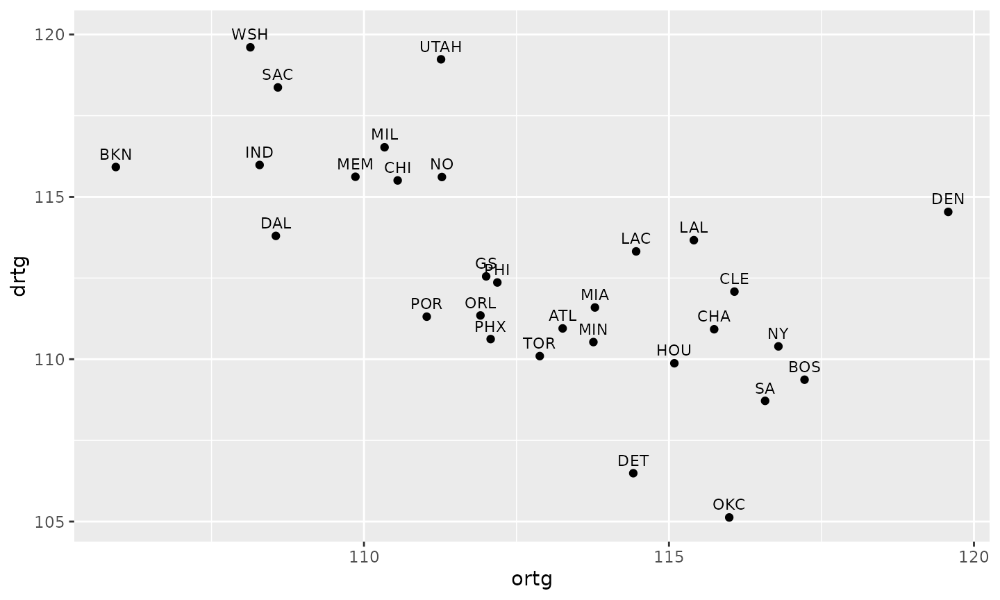
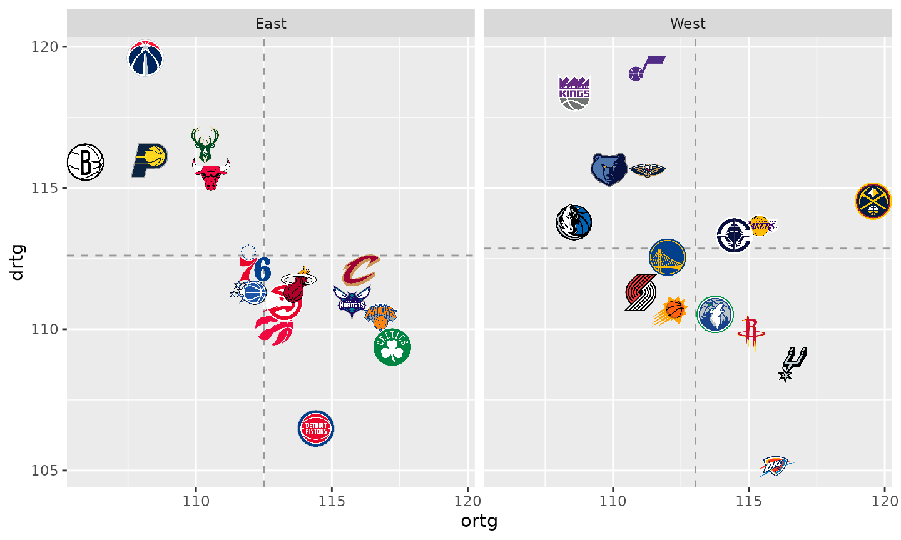
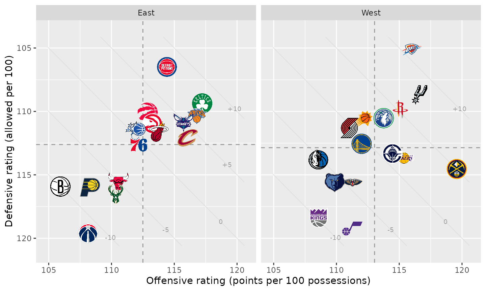
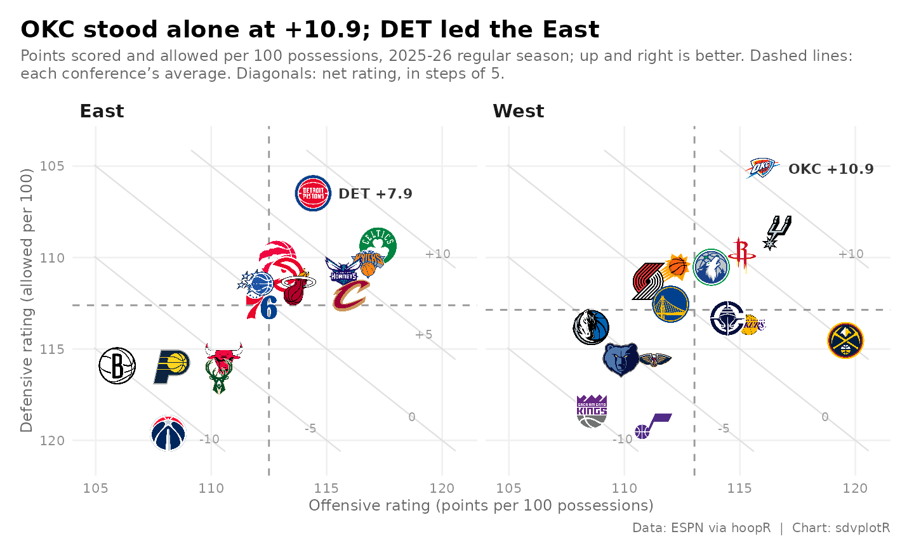
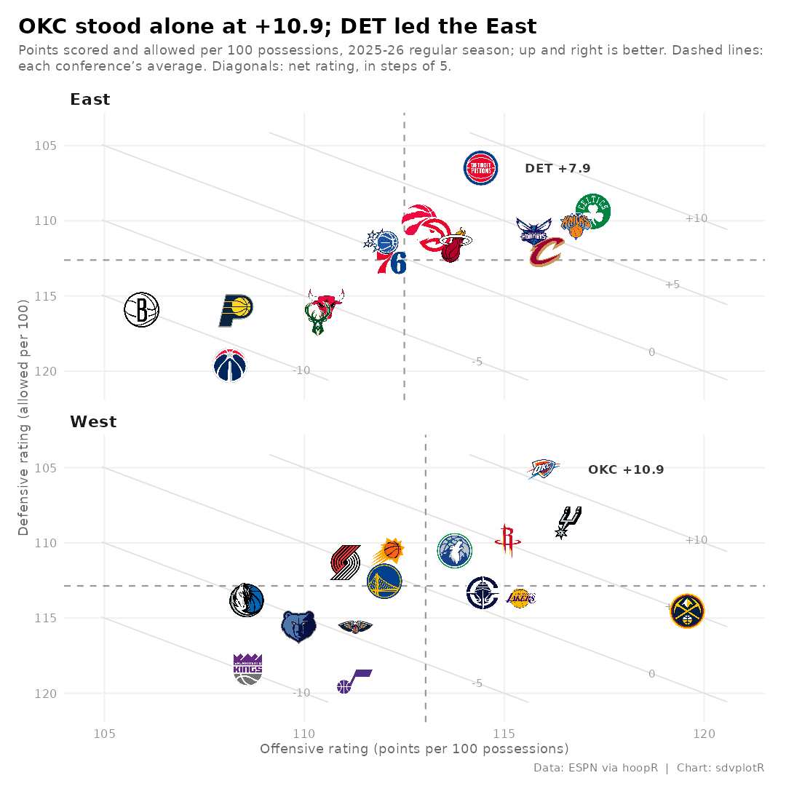

NBA Net Rating Quadrant
Source:vignettes/articles/recipe-nba-net-rating-quadrant.Rmd
recipe-nba-net-rating-quadrant.RmdOn this page
The brief: a season-review blog post needs one chart
of where all 30 teams finished on offense and defense, split by
conference, at 1600 px wide, plus a square version for Instagram. In
ggplot2 each fix is one more layer: logos with
geom_sdv_logos(), per-conference averages with
geom_mean_lines(), and facets for the conferences. The
ratings come from hoopR’s ESPN team box scores.
library(sdvplotR)
library(ggplot2)
library(dplyr, warn.conflicts = FALSE)
season <- 2026 # the 2025-26 season: NBA seasons are named by the year they end
label <- paste0(season - 1, "-", season %% 100)
out_dir <- tempfile("sdvplotR-recipe-") # where the exports go; use your own folder
dir.create(out_dir)1. Get the data
Offensive and defensive rating are points scored and allowed per 100 possessions. Possessions are estimated from the box score (FGA - OREB + TOV + 0.44 FTA) and averaged with the opponent’s, so both teams in a game share one count.
box <- hoopR::load_nba_team_box(season) |>
filter(season_type == 2) # regular season
games <- box |>
mutate(
poss = field_goals_attempted - offensive_rebounds + total_turnovers +
0.44 * free_throws_attempted
)
filter(games, is.na(poss)) |>
select(game_id, game_date, team_abbreviation, opponent_team_abbreviation)
#> # A tibble: 1 × 4
#> game_id game_date team_abbreviation opponent_team_abbreviation
#> <int> <date> <chr> <chr>
#> 1 401810169 2025-12-01 CHI ORLOne box score is missing a stat, so that game has no possession
count. An NA inside sum() would turn a whole
season into NA, so the game is dropped, for both teams
together: after the join both rows of that game have no shared
count.
opponents <- select(games, game_id, opponent_team_id = team_id, opp_poss = poss)
stopifnot(identical(class(games$opponent_team_id), class(opponents$opponent_team_id)))
ratings <- games |>
inner_join(opponents, by = c("game_id", "opponent_team_id")) |>
mutate(game_poss = (poss + opp_poss) / 2) |>
filter(!is.na(game_poss)) |>
group_by(team = team_abbreviation) |>
summarise(
ortg = 100 * sum(team_score) / sum(game_poss),
drtg = 100 * sum(opponent_team_score) / sum(game_poss)
) |>
mutate(net = ortg - drtg)
stopifnot(!anyNA(ratings$net))
nrow(ratings)
#> [1] 3333 teams in a 30-team league. clean_team_abbrs() finds
the extras: with keep_non_matches = FALSE, anything that is
not an NBA team comes back NA. They are the All-Star Game’s
teams, which ESPN files as regular-season games. The conference comes
from team_reference(), keyed by the same cleaned
abbreviation.
ratings <- ratings |>
mutate(team_abbr = clean_team_abbrs(team, sport = "nba", keep_non_matches = FALSE))
filter(ratings, is.na(team_abbr))$team
#> [1] "STARS" "STRIPES" "WORLD"
conferences <- team_reference("nba") |>
transmute(team_abbr, conference = sub("ern$", "", conference))
ratings <- ratings |>
filter(!is.na(team_abbr)) |>
inner_join(conferences, by = "team_abbr") |>
arrange(desc(net), team_abbr)
stopifnot(nrow(ratings) == 30)
head(ratings)
#> # A tibble: 6 × 6
#> team ortg drtg net team_abbr conference
#> <chr> <dbl> <dbl> <dbl> <chr> <chr>
#> 1 OKC 116. 105. 10.9 OKC West
#> 2 DET 114. 106. 7.93 DET East
#> 3 SA 117. 109. 7.86 SA West
#> 4 BOS 117. 109. 7.85 BOS East
#> 5 NY 117. 110. 6.40 NY East
#> 6 HOU 115. 110. 5.21 HOU West2. The first draft
Points and abbreviations, ggplot2’s defaults.
ggplot(ratings, aes(ortg, drtg, label = team_abbr)) +
geom_point() +
geom_text(nudge_y = 0.4, size = 3)
Three problems: the labels overlap, a low defensive rating is good but sits at the bottom, and the two conferences (which only meet a third of the time) are mixed together.
3. Logos, one panel per conference, and average lines
geom_sdv_logos() replaces the points,
facet_wrap() splits the conferences, and
geom_mean_lines() draws each panel’s own average offense
and defense, so every team is read against its conference.
ggplot(ratings, aes(ortg, drtg)) +
geom_mean_lines(aes(x0 = ortg, y0 = drtg), color = "grey60", linewidth = 0.5) +
geom_sdv_logos(aes(team = team_abbr), sport = "nba", width = 0.1) +
facet_wrap(vars(conference))
Better, but the best defenses are at the bottom, logos at the edges are cut off, and the axis titles are column names.
4. Point the axes the right way and add net-rating guides
scale_y_reverse() puts the best defenses on top, so up
and to the right is good on both axes, and expansion() on
both scales leaves room for the edge logos. Net rating is the gap
between the two numbers, so teams with the same net rating sit on a
diagonal: faint lines at -10, -5, 0, +5 and +10 show it without a third
axis. Each line is cut to the data’s range and drawn as data
(geom_segment()), so the reversed scale moves it with the
logos; a data frame with no conference column repeats in
both panels.
x_lim <- range(ratings$ortg) + c(-1, 1)
y_lim <- range(ratings$drtg) + c(-1, 1)
# the line drtg = ortg - net, cut to the box x_lim by y_lim
guides <- data.frame(net = c(-10, -5, 0, 5, 10)) |>
mutate(
x0 = pmax(x_lim[1], y_lim[1] + net),
x1 = pmin(x_lim[2], y_lim[2] + net)
) |>
filter(x0 < x1) |>
mutate(
y0 = x0 - net, y1 = x1 - net,
lx = x0 + 0.88 * (x1 - x0), ly = lx - net, # a label near the lower-right end
label = if_else(net > 0, paste0("+", net), as.character(net))
)
net_guides <- list(
geom_segment(
aes(x = x0, y = y0, xend = x1, yend = y1),
data = guides, inherit.aes = FALSE, color = "grey88", linewidth = 0.4
),
geom_text(
aes(x = lx, y = ly, label = label),
data = guides, inherit.aes = FALSE, color = "grey60", size = 2.6
),
geom_mean_lines(aes(x0 = ortg, y0 = drtg), color = "grey60", linewidth = 0.5)
)
p <- ggplot(ratings, aes(ortg, drtg)) +
net_guides +
geom_sdv_logos(aes(team = team_abbr), sport = "nba", width = 0.1) +
facet_wrap(vars(conference)) +
scale_x_continuous(expand = expansion(mult = 0.06)) +
scale_y_reverse(expand = expansion(mult = 0.08)) +
labs(
x = "Offensive rating (points per 100 possessions)",
y = "Defensive rating (allowed per 100)"
)
p
5. Polish and tell the story
A theme strips the chart junk (minor grid, panel background) and sets the type; the strip titles become plain bold labels on the left. The title states the finding, the subtitle explains the reading, and the caption carries the source. The two conference leaders get their net rating printed beside the logo.
leaders <- ratings |>
group_by(conference) |>
slice_max(net, n = 1, with_ties = FALSE) |>
ungroup() |>
mutate(note = sprintf("%s %+.1f", team_abbr, net))
top <- slice_max(leaders, net, n = 1)
east <- filter(leaders, conference == "East")
title <- if (top$conference == "West") {
sprintf("%s stood alone at %+.1f; %s led the East", top$team_abbr, top$net, east$team_abbr)
} else {
sprintf("%s led the league at %+.1f", top$team_abbr, top$net)
}
blog_theme <- theme_minimal(base_size = 10) +
theme(
plot.title.position = "plot",
plot.title = ggtext::element_textbox_simple(face = "bold", size = 14, margin = margin(b = 4)),
plot.subtitle = ggtext::element_textbox_simple(color = "grey40", size = 9, margin = margin(b = 8)),
plot.caption = element_text(color = "grey45", size = 7.5),
strip.text = element_text(face = "bold", size = 11, hjust = 0),
axis.title = element_text(color = "grey40", size = 9),
axis.text = element_text(color = "grey55"),
panel.grid.minor = element_blank(),
panel.grid.major = element_line(color = "grey94"),
plot.margin = margin(12, 14, 8, 12),
plot.background = element_rect(fill = "white", color = NA)
)
net_chart <- function(logo_width = 0.1, ncol = 2) {
ggplot(ratings, aes(ortg, drtg)) +
net_guides +
geom_sdv_logos(aes(team = team_abbr), sport = "nba", width = logo_width) +
geom_text(
aes(label = note), data = leaders,
hjust = 0, nudge_x = 1.1, size = 3, fontface = "bold", color = "grey20"
) +
facet_wrap(vars(conference), ncol = ncol) +
scale_x_continuous(expand = expansion(mult = 0.06)) +
scale_y_reverse(expand = expansion(mult = 0.08)) +
labs(
title = title,
subtitle = paste0(
"Points scored and allowed per 100 possessions, ", label,
" regular season; up and right is better. Dashed lines: each conference's ",
"average. Diagonals: net rating, in steps of 5."
),
x = "Offensive rating (points per 100 possessions)",
y = "Defensive rating (allowed per 100)",
caption = "Data: ESPN via hoopR | Chart: sdvplotR"
) +
blog_theme
}
net_chart()
6. Export for the blog and for Instagram
ggsave() takes the size in inches and a
dpi: 8 x 4.5 in at 200 dpi is the blog’s 1600 x 900. The
square post stacks the conferences (ncol = 1). Each panel
is then about twice as wide as before, and width is a share
of the panel’s width, so the square gets about half the share to keep
the logos the same size.
blog <- file.path(out_dir, "nba_net_rating_1600x900.png")
ggsave(blog, net_chart(), width = 8, height = 4.5, dpi = 200)
square <- file.path(out_dir, "nba_net_rating_1080x1080.png")
ggsave(square, net_chart(logo_width = 0.055, ncol = 1), width = 7.2, height = 7.2, dpi = 150)
magick::image_info(magick::image_read(c(blog, square)))[c("width", "height")]
#> # A tibble: 2 × 2
#> width height
#> <int> <int>
#> 1 1600 900
#> 2 1080 1080
magick::image_read(blog)
The square cut, stacked:
magick::image_read(square)